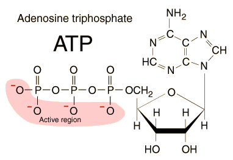
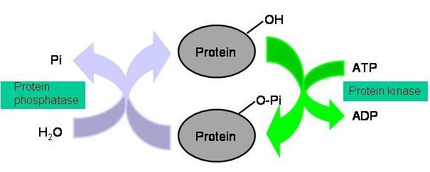

Fosfor
Tilbake til artikkelserien om næringsstoffene
Fosfor har atomnummer 15, og symbolet P. Fosfor har veldig mange viktige funksjoner, og inngår i mange fosfatholdige molekyler, blant annet i energimolekylet ATP. Det modne beinmineralet hydroksyapatitt inneholder også fosfat, som dermed også er viktig for god beinhelse. En person på 70kg har omtrent 700g fosfor lagret i kroppen, hvorav 85% finnes i beinvev og ca 10% i skjelettmusklene. Resten finnes inni andre celler, og sirkulerende i blodet. Fosfor er det mest utbredte anionet (negativt ladet ion) intracellulært, og finnes hovedsakelig som organiske, fosfatholdige molekyler som kreatinfosfat og ATP. I blodet er fosfatholdige molekyler, som H2PO4-, med å regulere syre-base-balansen.
Opptak og metabolisme
Mesteparten av fosforet vi får i oss hydrolyseres raskt av fosfataser i tarmen, slik at det blir frigjort inorganisk fosfat (Pi). Det er først og fremst Pi som absorberes, og mesteparten av opptaket skjer i jejunum. Opptaket skjer ved aktiv transport via et kotransportprotein som absorberer fosfor sammen med natrium, samt passiv, paracellulær diffusjon. Jevnt over tar vi opp rundt 65% av all fosforen vi får i oss. Det har tidligere vært antatt at D-vitamin spiller en viktig rolle i reguleringen av opptaket, men selv om mekanismene for at dette er tilfelle er kartlagt, er det uklart hvorvidt dette har en reell effekt. Det som først og fremst er grunnen til at fosfor ikke absorberes er at det danner komplekser med kalsium som spises samtidig. D-vitamin stimulerer absorbsjonen av kalsium, og på denne måten blir det mindre kalsium igjen til å binde fosfat, noe som kan være årsaken til at man har observert at opptaket av fosfat øker ved høyere nivåer av aktivt D-vitamin.
Mesteparten av fosfatet i kroppen finner vi i beinvevet som en bestanddel i det modne beinmineralet hydroksyapatitt. Resten fordeler seg intracellulært (mye i muskelvev) og ekstracellulært. I ekstracellulærvæsken finner vi Pi, hovedsakelig i form av bufferne H2PO4- og HPO42- som er viktig for å regulere blodets pH. Konsentrasjonene av Pi([Pi]) nøye regulert, noe som er veldig viktig. Dette er spesielt viktig med tanke på at fosfat og kalsium kan gå sammen og danne krystaller som kan avleires i vev, noe som omtales som kalsifisering. Det viktigste i denne sammenhengen er kalsiumfosfatproduktet (Ca x P). Normalt sett er ikke Ca x P høyt nok til at disse krystallene utfelles, mens hydroksyapatitt krever lavere konsentrasjoner. Derfor vil det under normale omstendigheter bli dannet hydroksyapatitt, men ikke kalsiumfosfatkrystaller, noe som skjer dersom Ca x P øker til omtrent dobbel verdi. Kalsium er veldig godt regulert i blodet, så endringer i Ca x P skjer hovedsakelig via endringer i [Pi].
[Pi] reguleres først og fremst ved å endre nyrenes reabsorbsjon og dermed hvor mye som skilles ut i urinen. Maksimal kapasitet for å reabsorbere fosfat kalles tubulær maksimum for fosfat (TmP). De to viktigste faktorene som er involvert i reguleringen av [Pi] er paratyroideahormon (PTH) fra biskjoldbruskkjertelen og fibroblast vekstfaktor 23 (FGF-23) som produseres i beinvevet. Begge disse vil nedregulere TmP og dermed øke utskilelsen av Pi. Mens PTH først og fremst stimuleres av reduserte blodkonsentrasjoner av kalsium, så stimuleres FGF-23 direkte av [Pi]. Når [Pi] øker, noe som kan skje som følge av høyt inntak eller redusert utskillelse, øker produksjonen av FGF-23, noe som øker utskillelsen av fosfat. Så langt har vi at redusert kalsium eller økt fosfat vil stimulere til økt utskillelse av fosfat over nyrene. FGF-23 er mekanismen som kontrolleres direkte av fosfatnivåene.
FGF-23 reduserer også produksjonen av aktivt D-vitamin i nyrene. Dette kan redusere opptaket av fosfat som følge av redusert kalsiumopptak og dermed utfelling av uabsorberbart kalsiumfosfat i tarmen. Lav [Pi] vil på den andre siden stimulere produksjonen av aktivt D-vitamin, noe som øker opptaket av kalsium og dermed fosfat. FGF-23 vil altså i tillegg til å øke utskillelsen av fosfat også redusere opptaket. Her skiller den seg fra PTH som vil stimulere opptaket av både kalsium og fosfat. Det som er felles for disse to er altså effektene på utskillelsen av fosfat.
Fosfat transporteres også fra tarmcellene og ut igjen i tarmen, sannsynligvis først og fremst som følge av at tarmcellene dør. Denne fosforen kan enten reabsorberes eller skilles ut i avføringen. Normalt taper vi imidlertid fosfor først og fremst via urinen, og utskillelsen her vil normalt sett tilsvare netto opptak fra tarmen, slik at fosfatkonsentrasjonene i blodet holder seg stabile. Unntaket fra dette er dersom vi bygger eller reduserer kroppsvev, ettersom fosfor er en nødvendig byggesten for alle kroppens celler.
Funksjoner
Fosfor har mange viktige funksjoner i kroppen, og er et svært viktig element i alle kroppens celler. Her er en rask gjennomgang av de mest sentrale funksjonen:
Mineralet inngår i hydroksyapatitt, som er et strukturelement i beinvevet vårt, og er nødvendig for å opprettholde god beinhelse. Under vekst er det helt nødvendig med et tilstrekkelig inntak av fosfor for at skjelettet kan vokse. Deretter er tilstrekkelig inntak viktig for å opprettholde beinmassen. Dette er fordi [Pi] medierer beinmassens respons på PTH, og for et gitt PTH-nivå så vil nedbrytningen av bein være større dersom [Pi] er lav.
Fosfor har viktige strukturelle egenskaper som bestanddel i fosfolipidene, som er viktige bestanddeler i cellemembranene våre.
Fosfor er viktig i energimetabolismen. Energimolekylene ATP, GTP og kreatinfosfat inneholder fosfor, og det er avspalting av fosfatgruppene fra disse molekylene som frigir energi som cellene kan benytte seg av.

En del vitaminer, som f.eks. thiamin og B6, inneholder fosfor, som derfor er viktig for deres funksjoner.
Fosfor er viktig i enzymatiske prosesser. En del proteiner aktiveres/deaktiveres ved at det bindes en fosfatgruppe til proteinet, en såkalt fosforylering.

Fosfor spiller også inn i reguleringen av syre-base-balansen, ved å inngå i molekyler som fungerer som buffere. Det viktigste av disse molekylene er H2PO4-. Denne mekanismen er ikke så viktig for reguleringen av blodet, da andre buffersystemer finnes her, men i nyrene og intracellulært er den veldig viktig.
DNA/RNA inneholder fosfor, som dermed er viktig for oppbyggingen og stabiliteten til disse molekylene.
Behov og anbefalinger
Behovet for fosfor styres av fosforbalansen i kroppen vår, og måles utifra hvor mye vi skiller ut gjennom avføring og over nyrene. Nivåene av fosfor er som nevnt godt regulert, og reabsorbsjon fra nyrene kan reguleres opp eller ned etter inntaket. Det må understrekes at et kosthold som inneholder tilstrekkelig med protein og kalsium automatisk også vil inneholde tilstrekkelig fosfor, noe som gjør at dette ikke er noe å tenke på for friske mennesker. Det er derimot en stor utfordring når man skal planlegge kostholdet til personer med nyresvikt som ofte må har kraftige restriksjoner på fosfatinntaket, siden det da er veldig vanskelig å komme i mål med andre næringsstoffer.
De norske anbefalingene ligger rundt 600mg/dag, noe høyere for gravide og ammende. Dette tilsvarer mengden vi får i oss fra ca 100g solsikkefrø, 100g jarlsbergost eller 250g kyllingfilet. I USA anbefales ungdom å få i seg 1250mg/dag, mens anbefalingene for voksne er nærmere de norske.
Mangeltilstander
Fosformangel manifesterer seg som lave fosfatnivåer i blodet, kalt hypofosfatemi. Ettersom mesteparten av fosfatet befinner seg ekstracellulært (ikke medregnet det som er lagret i beinvev) er de fleste vev avhengig av tilstrekkelig høye konsentrasjoner av fosfat i blodet. Hypofosfatemi fører derfor til metabolsk fosfatmangel, noe som hindrer normal cellefunksjon. Dette gir symptomer som vekttap, anemi, muskelsvakhet, smerter i beinvevet, rakitt og beinskjørhet, redusert motstandskraft mot infeksjoner, kribling i huden, forvirring og i verste fall kan det føre til død.
Hypofosfatemi kan være genetisk bestemt, og vi kjenner til genvarianter som øker fosfatutskillelsen både direkte og indirekte. Indirekte kan dette eksempelvis skyldes økt produksjon av FGF-23 eller defekter i D-vitaminmetabolismen som gir økt utskillelse av PTH.
Hypofosfatemi skyldes nesten aldri mangelfullt inntak av mineralet, men andre faktorer. Diaré, alkoholisme, malabsorbsjonstilstander eller D-vitaminmangel kan gi mangelfullt fosfatopptak i tarmen. Diabetisk ketoacidose eller andre organiske acidoser kan føre til en økt utskillelse av fosfor, mens noen nyresykdommer redusere TmP og dermed gi økt utskillelse. Etter perioder med underernæring kan man risikere å utvikle hypofosfatemi som en del av det som er kjent som reernæringssyndromet. Dette er antatt å skyldes at økt opptak av glukose til cellene for å erstatte energilagrene som gikk tapt som følge av underernæringen også fører til at fosfat absorberes sammen med glukosen. Fosfatet fjernes dermed raskt fra blodbanen, og det er i slike situasjoner viktig å holde kontinuerlig øye med fosfatkonsentrasjonene.
Kan vi få for mye?
Hyperfosfatemi skyldes i de fleste tilfeller nyresvikt, der utskillelsen av mineralet ikke fungerer. Dette er en stor utfordring, ettersom det er svært vanskelig å begrense fosfatinntaket tilstrekkelig uten å få for lite av andre næringsstoffer, deriblant protein og kalsium. Derfor er nyresviktpasienter avhengig av å enten benytte seg av fosfatbindere, som binder fosfat i tarmen og hindrer opptak, eller å jevnlig fjerne fosfat fra blodet gjennom dialyse.
Hovedproblemet med hyperfosfatemi er at Ca x P øker, noe som legger tilrette for kalsifisering av vev. Spesielt går dette ut over nyrer og hjerte, og kalsifisering av blodårer kan føre til hjertedød. Dette skjer veldig sjelden hos personer med friske nyrer, ettersom utskillelsen er godt regulert. I sjeldne tilfeller kan det likevel oppstå, eksempelvis ved D-vitaminforgiftning.
Biotilgjengelighet og gode kilder
Fosfor finnes i de fleste proteinrike matvarer, som kjøtt, fisk, sjømat og meieriprodukter. Vi finner også fosfor i kornprodukter, frukt, bær og grønnsaker. Fytat er et fosfatholdig antinæringsstoff, og dette fosforet tar vi ikke opp.
Biotilgjengeligheten er høyest i kjøtt og fisk. Melkeprotein (kasein) inneholder noen fosfopeptider som ikke lar seg bryte ned, og fytater fra kornprodukter binder til fosfor og andre mineraler og hindrer opptak. Det som først og fremst påvirker opptaket av fosfat er hvor mye kalsium som inntas samtidig, da kalsium og fosfat kan bindes i tarmen og danne salter som ikke absorberes. Dette er grunnen til at kalsiumsalter benyttes som fosfatbindere for å redusere fosforopptaket hos personer med nyresvikt.
Aktuelt om fosfor
- Det er uttrykt bekymring for hvorvidt et økende fosforinntak fra prosessert mat og spesielt fosforholdige drikkevarer som brus kan representere et problem. Økt fosfatkonsentrasjon er satt i sammenheng med nyresvikt, hjertesykdom og beinhelse, men det er usikkert i hvor stor grad små økninger i fosfatkonsentrasjonene påvirker risikoen. En nylig publisert reviewartikkel tar for seg denne problemstillingen.
Artikkelen er sist oppdatert juli 2013